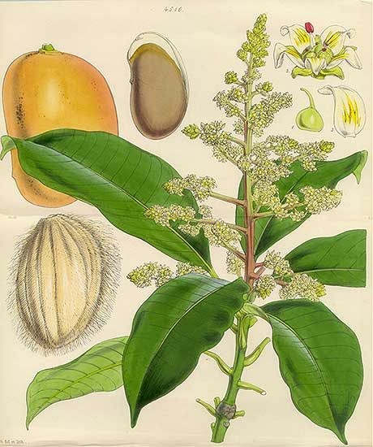

आमMango
Mangifera indica · Anacardiaceae · FLR-0011

- Scientific name
- Mangifera indica L.
- Family
- Anacardiaceae
- Hindi
- आम
- Status here
- native
- IUCN
- not evaluated
When to look कब देखें
Present all year.
आम / Mango
Mangifera indica L. — Anacardiaceae
आम — उत्तर प्रदेश भारत का सबसे बड़ा आम उत्पादक राज्य है, जो लखनऊ की दशहरी, वाराणसी के लंगड़ा और चौसा जैसी अद्वितीय किस्में देता है। सदियों से इंसानी मेहनत द्वारा चुनी गई इन मीठी और रसीली किस्मों के पीछे वही जंगली पेड़ है जो करोड़ों वर्षों से दक्षिण एशिया के वनों में प्राकृतिक रूप से विकसित हुआ है। आम कोई आयातित प्रजाति नहीं है, बल्कि यह इसी मिट्टी की मूल निवासी और भारत का गौरवशाली राष्ट्रीय फल है।
Quick Identification त्वरित पहचान
| Feature | Description |
|---|---|
| Size & Canopy | Large evergreen tree (20–40 m tall) with a dense, domed, highly branched crown |
| Leaves | Alternate, narrowly lance-shaped (25–40 cm long), leathery; new leaves are copper-red or pinkish |
| Flowers | Tiny (5–6 mm), yellowish-pink or cream flowers in large branched terminal panicles (up to 40 cm long) |
| Fruit | A large, fleshy drupe (6–30 cm long), variable in shape (oblong, kidney-shaped); green ripening to yellow-orange |
| Latex | Milky white or grey resinous sap that exudes from injured twigs, leaves, or fruit stalks |
| Aroma | Distinctive resinous, sweet, and fruity mango aroma when leaves or bark are scratched |
Field tip: Any large evergreen tree with long, narrow, dark green leaves that release a sharp, resinous mango scent when crushed is a Mango tree. In spring, look for the flush of coppery-red new leaves at the branch tips and large, dense cream-yellow flower panicles.
Morphology आकारिकी
Biometrics (typical measurements in the Gangetic plain):
| Feature | Measurement |
|---|---|
| Tree height | 15–30 m |
| Leaf length | 25–40 cm |
| Leaf width | 5–8 cm |
| Panicle length | 10–40 cm |
| Fruit length | 6–30 cm |
Habit: Large evergreen tree, typically 20–40 m tall. Crown dense, dome-shaped to spreading; old orchard trees often pruned shorter (8–12 m) but wild specimens can be much taller. Trunk short and stout, often branching low.
Bark: Grey-brown to dark brown, smooth in young trees; older trees develop rough, scaly, longitudinally fissured bark. Inner bark pale yellow-green. Scratch releases white or yellowish latex.
Leaves: Alternate, simple, narrowly lanceolate, 25–40 cm long, 5–8 cm wide. Leathery, glossy dark green above when mature. New leaves: copper-red, orange-pink, or purplish — one of the most striking features of young mango growth, visible from a distance on a dark green tree.
Flowers: Tiny, 5-petalled, yellowish-pink or cream, in large terminal panicles up to 40 cm long. Produced abundantly; a large tree in full flower is covered in yellow-cream inflorescences. Most flowers are male; only a small percentage are bisexual and set fruit.
Fruit: Drupe, highly variable by variety — 6–30 cm long, 0.2–2 kg. Skin thin, green-yellow-red. Flesh fibrous to fiberless, yellow-orange, sweet-acid. Stone (endocarp) large, flat, fibrous, contains the seed.
हिंदी: नई पत्ती — तांबे जैसी लाल, फिर हरी।
फूल — नवम्बर से मार्च; छोटे, बड़े गुच्छों में।
फल — सबको पता है, लेकिन याद रखें: एक ही प्रजाति (Mangifera indica) से सैकड़ों किस्में मिलती हैं।
Ecological Role पारिस्थितिक भूमिका
Pollination ecology: Mango flowers are pollinated by small insects — hoverflies (Drosophilidae, Syrphidae), small bees, and thrips are the main pollinators. Large bees (honeybees) visit but are less efficient. Parakeets, mynas, and sunbirds also visit flowers for nectar and can act as incidental pollinators.
Fruit as food resource: Ripe mango is consumed by:
- Indian Flying Fox (Pteropus medius) — a major seed disperser; causes orchard damage but is ecologically essential
- Rose-ringed Parakeet, Common Myna, Asian Koel — peck at fruit while on tree
- Crows (Corvus splendens) — damage ripe fruit
- Mongoose and civets (where present) — ground-level fruit
Keystone in fruiting calendar: In eastern UP, mango is the dominant large fruit available April–July. This is critical for fruit-eating animals that must bridge the lean pre-monsoon period.
Insect diversity: Mango hosts a complex insect community — mango hoppers (Idioscopus sp.), mango mealybug (Drosicha mangiferae), mango stone weevil (Sternochetus mangiferae) — and their predators (lacewings, parasitic wasps).
Shade canopy: Old mango orchards in eastern UP are among the densest shade environments available. They host ground-foraging birds (pond herons, mynas, drongos) and reptiles (garden lizards, rat snakes).
हिंदी: आम के फूल छोटे कीटों से परागित होते हैं।
फल बड़े चमगादड़, तोते, मैना, कोयल खाते हैं।
मई–जुलाई में पूर्वी यूपी का सबसे बड़ा फल — जंगली जीवों के लिए भी ज़रूरी।
Life Cycle / Phenology जीवन चक्र
- Germination: Large seed germinates within days of falling; high success rate in moist soil
- Vegetative growth: 5–8 years before first fruiting from seed; grafted varieties fruit in 2–4 years
- Lifespan: 200–300 years; some recorded specimens are 400+ years old; productivity often peaks at 10–40 years
- Flowering: November–March (the timing is temperature-sensitive; warm winters reduce flower set — climate-sensitive)
- Fruiting: April–July; peak June in eastern UP
- New leaf flush: After fruiting, August–September; new leaves copper-red, then maturing to dark green
हिंदी: बीज से 5–8 साल में पहली फसल।
जीवनकाल 200–300 साल।
फूल नवम्बर–मार्च (तापमान-संवेदनशील)।
फल अप्रैल–जुलाई — पूर्वी यूपी में जून में चरम।
Varieties of Eastern UP पूर्वी यूपी की प्रमुख किस्में
Eastern UP and the adjoining region is one of the world's most important mango diversity hotspots:
| Variety | हिंदी | Notes |
|---|---|---|
| Dasheri | Dashari (दशहरी) | Named after Dasheri village near Lucknow; fiberless, sweet; most exported |
| Langra | Langra (लंगड़ा) | From Varanasi region; named for the "lame" tree; green even when ripe |
| Chausa | Chausa (चौसा) | From Chausa near Buxar; large, sweet, grown in Azamgarh/Ballia belt |
| Safeda | Safeda (सफेदा) | Early season; pale yellow; widely grown in UP homesteads |
| Malda | Malda (मालदा) | Eastern UP / Bihar border variety; fibrous, very sweet |
| Deshi/Desi | Desi (देशी) | Generic term for local unselected varieties; highly variable |
हिंदी: पूर्वी यूपी मैंगो बेल्ट का हिस्सा है। दशहरी, लंगड़ा, चौसा — ये सब यहीं के हैं।
Agricultural / Human Relevance कृषि और मानव संबंध
Economic importance: Uttar Pradesh produces ~25% of India's total mango output. The Malihabad area of Lucknow district alone has 30,000+ hectares under mango orchards. Mango cultivation is the primary income source for hundreds of thousands of farm families in the region.
Every part is used:
- Fruit: eaten fresh, pickled (आचार), dried (अमचूर), as aamras (pulp), panna (raw mango drink for heat)
- Raw fruit (kairi): essential in UP summer food — consumed with salt and chilli, used in chutneys
- Wood: hard, durable; used for furniture, flooring, musical instruments (cheaper alternative to rosewood)
- Leaves: used in Hindu rituals — mango leaf festoons (torans) hung on doorways for festivals, weddings; considered auspicious
- Bark: tannin source; traditional medicine for diarrhoea
- Kernel (from the seed): mango kernel fat — used as cocoa butter substitute in confectionery industry
Pests of concern in UP:
- Mango hopper (Idioscopus sp.): major pest of flowers; can destroy entire crop
- Mealybug (Drosicha mangiferae): nymphs crawl up trunk in February; banded trunks (traditional management)
- Stone weevil: larvae inside seed; internal damage invisible
- Powdery mildew: fungal disease of flowers in humid winters
हिंदी: यूपी भारत के 25% आम का उत्पादन करता है।
कच्चा आम (कैरी), आचार, अमचूर, आमरस — हर रूप में इस्तेमाल।
पत्तियाँ शादी-पूजा में, लकड़ी फ़र्नीचर में, बीज का तेल मिठाई उद्योग में।
Expected Locally स्थानीय रूप से अपेक्षित
Not a field record. Written from published accounts for eastern Uttar Pradesh. No confirmed local sighting yet — if you have seen it, that is what the atlas needs.
अभी तक स्थानीय पुष्टि नहीं। यह विवरण प्रकाशित स्रोतों से है, किसी अवलोकन से नहीं।
Mango orchards are a prominent landscape feature across Basti district. Traditional baag properties containing decades-old trees are maintained as multi-layered shade gardens. The harvest season in June is the main agricultural activity of the summer months, with local desi and dashari varieties filling municipal markets in Basti town.
Distribution वितरण
Global range: Native to South and Southeast Asia (primarily India, Myanmar, and Bangladesh); now widely cultivated in tropical and subtropical regions globally.
In India: Cultivated throughout the country in tropical and subtropical zones, from the plains to elevation limits of 1,200 m.
In Uttar Pradesh: Extremely common across the state, with major commercial orchard belts in Malihabad, Saharanpur, and eastern UP districts.
In Basti district / eastern UP: Highly common, planted in extensive orchard clusters (baag) and around domestic homesteads in every village.
Range notes: Cultivated for over 4,000 years.
Research Questions शोध प्रश्न
Anyone can investigate these | कोई भी इन प्रश्नों की जाँच कर सकता है
- Which insects pollinate mango flowers in your orchard? / आपके बाग में आम के फूलों का परागण कौन करता है? — Watch flowers for 30 minutes at 8–11 AM in February; photograph every insect visitor. Most UP farmers don't know the answer.
- Do Flying Foxes visit your mango orchard? / क्या आपके बाग में फल चमगादड़ आते हैं? — Check for bite marks on ripening fruit; watch at dusk. If they do, how much is the damage really?
- How old is the oldest mango tree in your village? / आपके गाँव का सबसे पुराना आम का पेड़ कितना पुराना है? — Ask elders. Measure trunk girth — an imperfect but useful age proxy.
- What is the first date mango flowers appear each year? / हर साल आम के फूल पहले कब आते हैं? — Record the date annually from the same tree. Track shifts over years as a climate indicator.
- Which local variety is the last to ripen in your village? / आपके गाँव में कौन सी देशी किस्म सबसे देर से पकती है? — Map local desi varieties before they're replaced by Dasheri monocultures.
Similar Species मिलती-जुलती प्रजातियाँ
| Species | How to tell apart | हिंदी |
|---|---|---|
| Wild Mango (Mangifera sylvatica) | Smaller fruit, more acidic; found in Himalayan foothills | जंगली आम |
| Aam-tetar (Spondias pinnata) | Compound leaves (not simple); smaller, more acidic fruit | अम्बाड़ा / ताड़-आम |
| Karanja (Pongamia pinnata) | Similar large-tree silhouette but leaves compound, flowers pink-purple, not a fruit tree | करंज |
Field rule: Long narrow copper-red new leaves + mango smell when scratched + large fleshy fruit with one flat stone = mango. No other UP tree has this combination.
Taxonomy & Classification वर्गीकरण
Original description. Mangifera indica was described by Carl Linnaeus in 1753 in Species Plantarum, vol. 1, p. 200. Type locality: India. The genus name Mangifera is derived from the Tamil name for the fruit, manga, combined with Latin ferre (to bear), while indica refers to India.
Subspecies. Monotypic — no subspecies are currently recognised, although thousands of selected cultivars exist in cultivation.
Family and order placement. Placed in the order Sapindales, family Anacardiaceae (cashew or sumac family). Anacardiaceae is characterized by resinous sap, which is often irritating or allergenic.
Phylogenetic notes. Mangifera indica is the type species of the genus Mangifera, which contains around 69 species native to tropical Asia. It is closely related to wild forest mangoes. No major taxonomic controversies are active.
IUCN status rationale. This species has not been formally assessed by the IUCN Red List (Not Evaluated). Because of its extensive commercial cultivation and deep integration in agricultural systems globally, the species is highly secure.
Photo Gallery फोटो गैलरी
References संदर्भ
- Linnaeus, C. (1753). Species Plantarum. Laurentius Salvius, Holmiae.
- Mukherjee, S.K. (1953). The mango and its wild relatives. Phytomorphology, 3: 273–280.
- Singh, R.N. & Majumder, P.K. (2000). The Mango. Indian Council of Agricultural Research, New Delhi.
- Botanical Survey of India — Flora of Uttar Pradesh.
- NHB (National Horticulture Board) — Mango production statistics, Uttar Pradesh 2022.
- Verma, L.R. & Shankar, U. (1988). Insect visitors and pollinators of mango. Journal of the Bombay Natural History Society, 85(1): 43–48.
- GBIF Occurrence Data — Mangifera indica records (2010–2024).
Source file: species/flora/trees/mango.md